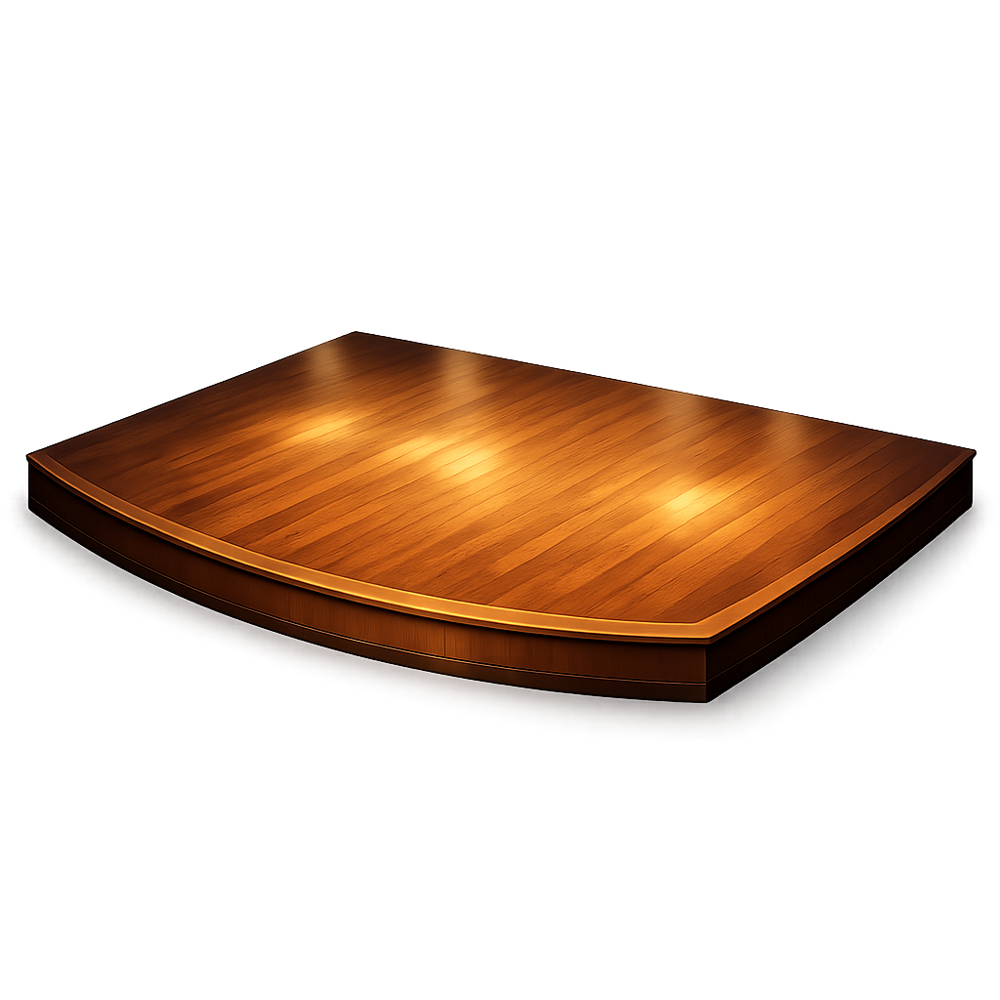
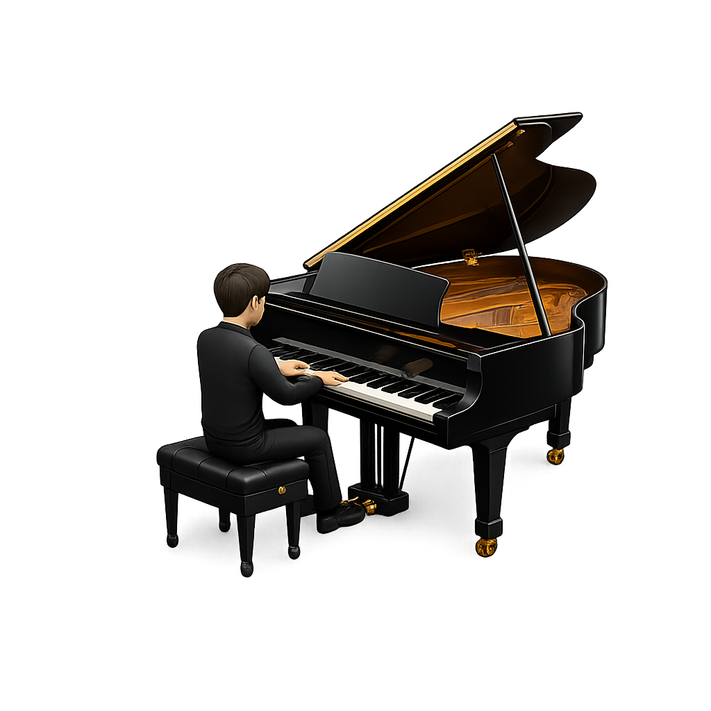

Dal solista che si esibisce da solo all'orchestra con decine di musicisti. Ogni formazione ha una storia, una composizione di strumenti e uno scopo didattico diverso. Seleziona una formazione dalla barra sopra per scoprire come è nata, quali strumenti la compongono e in quali contesti musicali si usa.


Il solista è un musicista che si esibisce da solo, senza accompagnamento. Può suonare uno strumento o cantare, e il suo talento e la sua interpretazione sono il fulcro dello spettacolo. È una delle formazioni più antiche e nobili della musica classica.
💡 Curiosità didattica:
Molti solisti famosi, come Niccolò Paganini, erano virtuosi del loro strumento e stupivano il pubblico con esibizioni incredibili. Oggi, i solisti continuano ad essere protagonisti dei concerti più importanti.
Scegli gli strumenti, sistemali sul palco e osserva quale gruppo musicale prende forma: solista, duo, quartetto, ensemble o band.
Apri il laboratorio